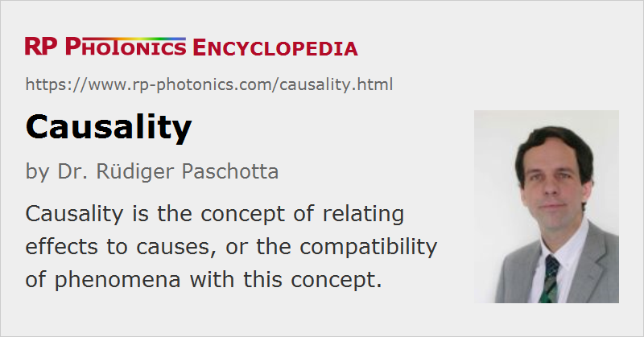

Causality
Definition: the concept of relating effects to causes, or the compatibility of phenomena with this concept
German: Kausalität
Category: physical foundations
How to cite the article; suggest additional literature
Author: Dr. Rüdiger Paschotta
Causality is one of the most fundamental principles of philosophy, physics, and other sciences. It is essentially the attempt to make sense of observations by linking events (effects) to other events (causes) and explaining the mechanisms behind these relations. A fundamental requirement is that a caused effect can not occur before the cause. Within Einstein's theory of relativity, causality even requires a more stringent restriction: the time between cause and event must be at least the time which light propagating in vacuum needs to get from the location of the cause to the location of the event. In short, no signal can propagate faster than light does in vacuum. The technical details are complicated; the description of space and time in the theory of relativity is sophisticated and not in tune with our natural intuition.
In optics, causality implies that light can never be used for transmitting a signal with a higher velocity than c, the vacuum velocity of light. There are certain situations, where this restriction appears to be violated, because light can propagate with a phase velocity or group velocity greater than c. At a first glance, this may suggest the possibility of superluminal transmission of information. However, Maxwell's theory of electromagnetism and the theory of quantum electrodynamics have been proven to be strictly causal, and there is so far no reason to believe that these theories have to be replaced with non-causal ones. Any description of apparently non-causal effects in light propagation on the basis of Maxwell's equations must logically be flawed at some point, which, however, is not always easy to identify.
In optics, causality has important consequences, e.g. in the form of the Kramers–Kronig relations, relating the frequency-dependent refractive index of a medium to its frequency-dependent absorption properties.
Questions and Comments from Users
Here you can submit questions and comments. As far as they get accepted by the author, they will appear above this paragraph together with the author’s answer. The author will decide on acceptance based on certain criteria. Essentially, the issue must be of sufficiently broad interest.
Please do not enter personal data here; we would otherwise delete it soon. (See also our privacy declaration.) If you wish to receive personal feedback or consultancy from the author, please contact him e.g. via e-mail.
By submitting the information, you give your consent to the potential publication of your inputs on our website according to our rules. (If you later retract your consent, we will delete those inputs.) As your inputs are first reviewed by the author, they may be published with some delay.
Bibliography
| [1] | A. Sommerfeld, “Ein Einwand gegen die Relativtheorie der Elektrodynamik und seine Beseitigung”, Phys. Z. 8, 841 (1907) |
| [2] | C. K. Hong et al., “Measurement of subpicosecond time intervals between two photons by interference”, Phys. Rev. Lett. 59 (18), 2044 (1987), doi:10.1103/PhysRevLett.59.2044 |
| [3] | A. M. Steinberg et al., “Measurement of the single-photon tunneling time”, Phys. Rev. Lett. 71 (5), 708 (1993), doi:10.1103/PhysRevLett.71.708 |
| [4] | A. Ranfagni et al., “Anomalous pulse delay in microwave propagation: a plausible connection to the tunneling time”, Phys. Rev. E 48 (2), 1453 (1993), doi:10.1103/PhysRevE.48.1453 |
| [5] | D. Mugnai et al., “Observation of superluminal behaviors in wave propagation”, Phys. Rev. Lett. 84 (21), 4830 (2000), doi:10.1103/PhysRevLett.84.4830 |
| [6] | K. J. Resch et al., “Total reflection cannot occur with a negative delay time”, IEEE J. Quantum Electron. 37 (6), 794 (2001), doi:10.1109/3.922777 |
| [7] | M. D. Stenner et al., “The speed of information in a ‘fast-light’ optical medium”, Nature 425, 695 (2003), doi:10.1038/nature02016 |
| [8] | P. Tournois, “Apparent causality paradox in frustrated Gires–Tournois interferometers”, Opt. Lett. 30 (8), 815 (2005), doi:10.1364/OL.30.000815 |
| [9] | X. Liu et al., “Time delay associated with total reflection of a plane wave upon plasma mirror”, Opt. Express 14 (8), 3588 (2006), doi:10.1364/OE.14.003588 |
| [10] | R. Y. Chiao and A. M. Steinberg, “Tunneling times and superluminality”, in Progress in Optics (ed. E. Wolf), Vol. XXXVII, Elsevier, Amsterdam (1997), pp. 347–406 |
| [11] | J. D. Jackson, Classical Electrodynamics, John Wiley & Sons, Inc., New York (1998) |
See also: superluminal transmission, Kramers–Kronig relations
and other articles in the category physical foundations
|  |
If you like this page, please share the link with your friends and colleagues, e.g. via social media:
These sharing buttons are implemented in a privacy-friendly way!